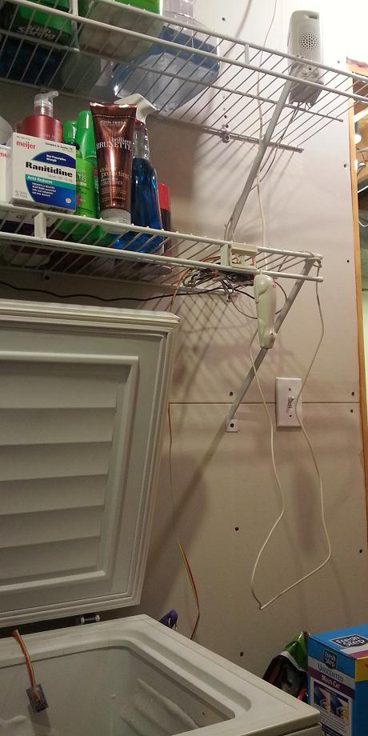

Hi there! I'm the Freezer Pi!
That is, I'm a Raspberry pi hanging out by a freezer.
See me below, that's me tie-wrapped under that shelf.
You can see my peripherals spread out all over:
- Powered speaker (thanks Ray!)
- CueCat (barcode scanner)
- DS1631 I2C thermometer
